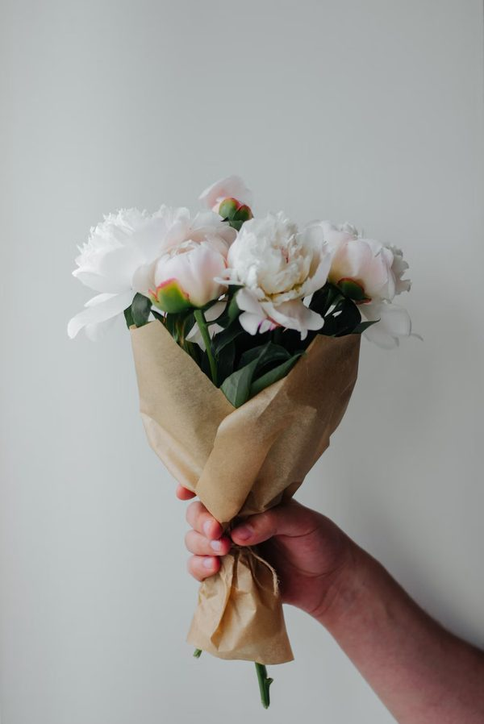
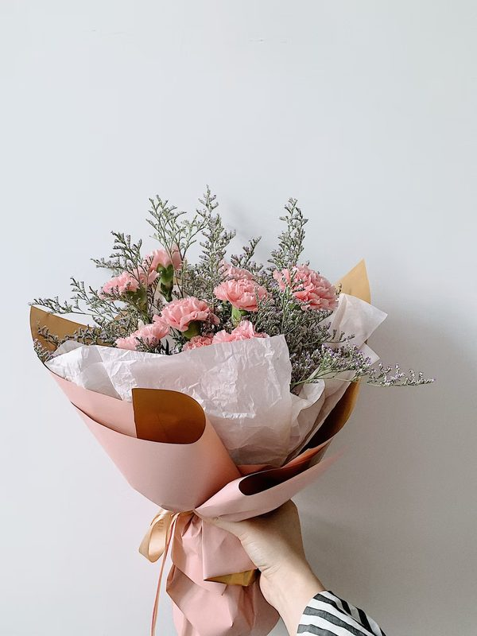
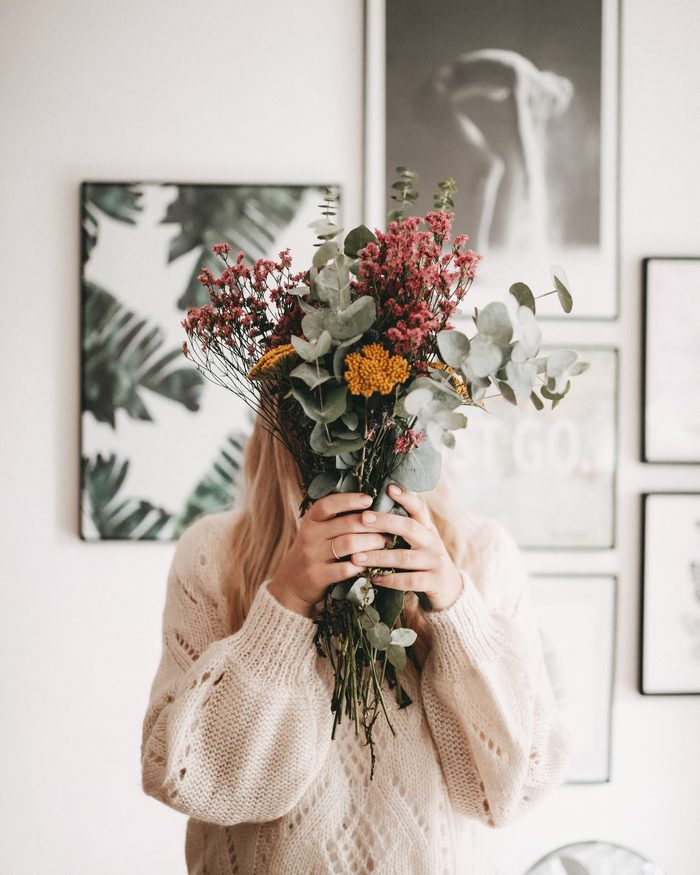
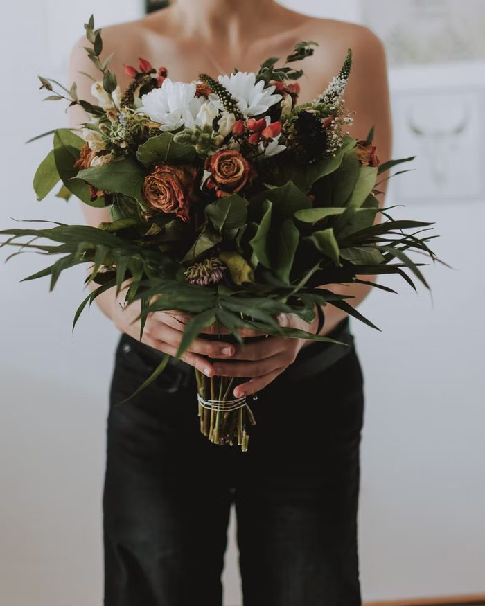
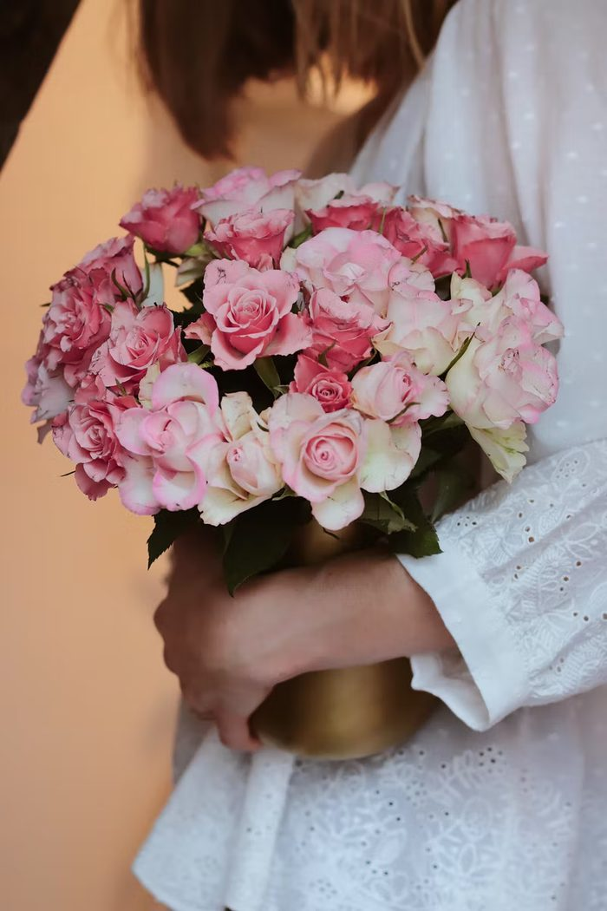
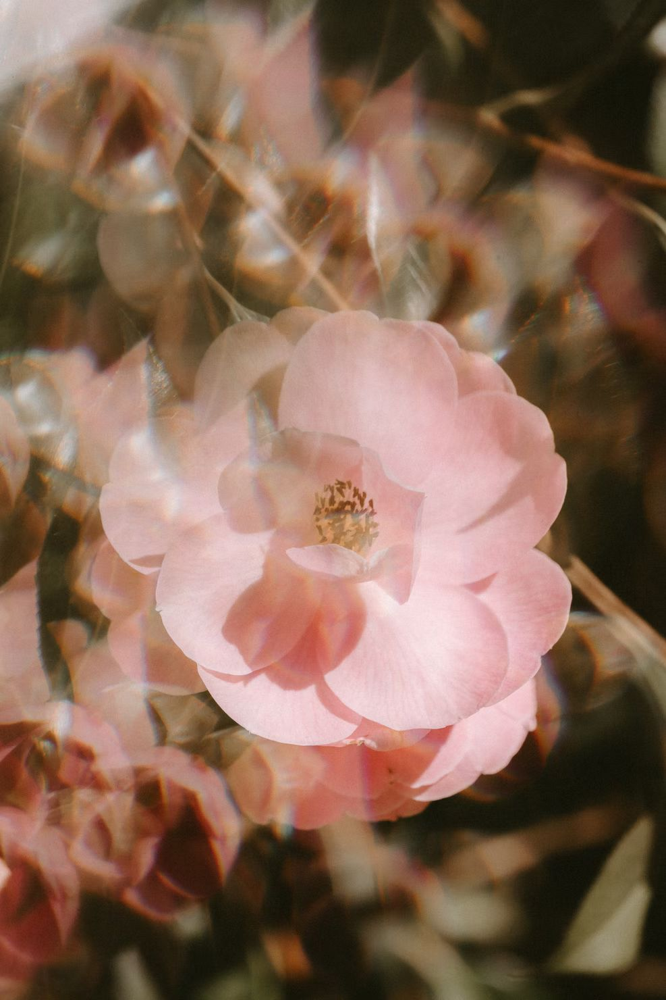

Fiori ed erboristeria
Tisane, erbe sfuse e il campo dei fiori da taglio.

Le erbe delle nostre tisane crescono nel campo dietro casa. Bolzano Vicentino, dal 2006.
Guarda l'erbario
Tisane, erbe sfuse e il campo dei fiori da taglio.

Conserve, farine, frutta e verdura del giorno.

Massimo e Maria hanno tenuto le api per più di vent'anni.

Calendula, malva, lavanda, iperico, melissa. E accanto, l'orto di stagione, le api e il campo dei fiori da taglio.
Semino, colgo, essicco, miscelo.
Non è un'erboristeria che compra e rivende. Ogni miscela ve la diamo in mano, raccontandovi da quale filare arriva.

Calendula officinalis

Lavandula angustifolia

Hypericum perforatum
Monarda didyma


✦ 24 giugno
La sera prima si raccolgono le erbe e si mettono in acqua sotto le stelle. La mattina dopo ci si lava con la rugiada. Si sta insieme, si spiega cosa va nel mazzo e perché.

✦ Luglio – Settembre
Si entra tra i filari con le forbici e il secchio e ci si fa il mazzo da sé: dalie, zinnie, girasoli, ammi. Si paga a stelo.

✦ Estate
Cena semplice all'aperto, giro nei campi al tramonto e assaggio di tisane fredde. Posti pochi, si prenota.

✦ Autunno
Si guarda dentro l'essiccatoio, si compone la propria miscela, si porta a casa il sacchetto con l'etichetta scritta a mano.

Massimo e Maria hanno tenuto le api per più di vent'anni. Nel 2006 sono diventata erborista e li ho convinti a provare una cosa nuova: convertire tutto al biologico e cominciare a seminare officinali. Da lì sono arrivate le tisane, poi la bottega, poi l'orto e il campo dei fiori.
Emanuela, la nostra erborista
Tisane ed erbe sfuse, miele, conserve, farine, frutta e verdura del giorno, fiori in stagione. Si entra anche solo per il profumo, non ci offendiamo.
Lunedì 15:30 – 19:00. Mar – Sab 9:00 – 12:00 / 15:30 – 19:00. Domenica chiuso.
Via Cafarette 6, 36050 Bolzano Vicentino (VI)